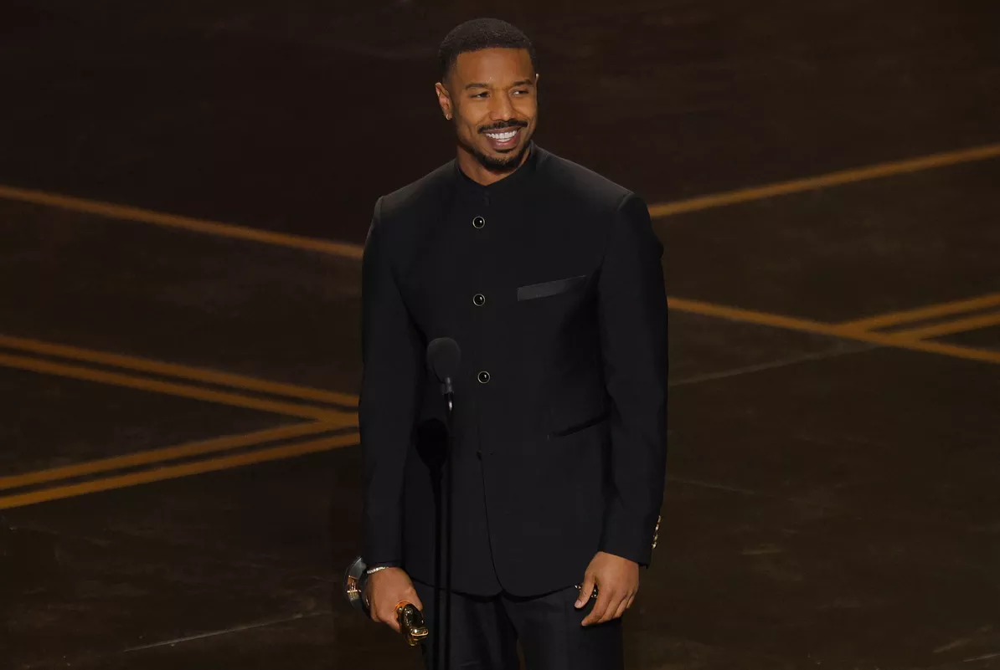
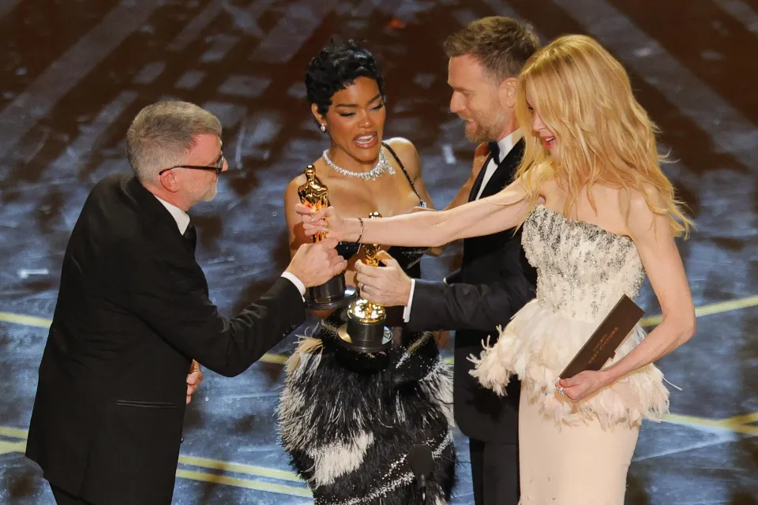
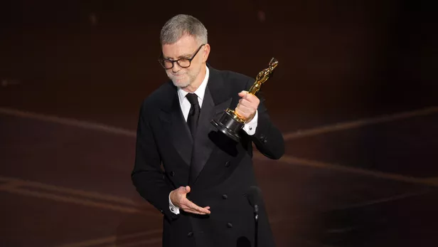
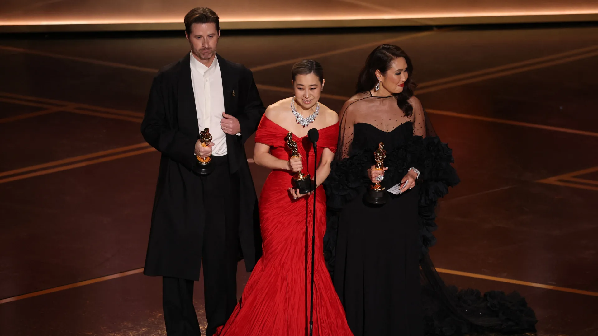
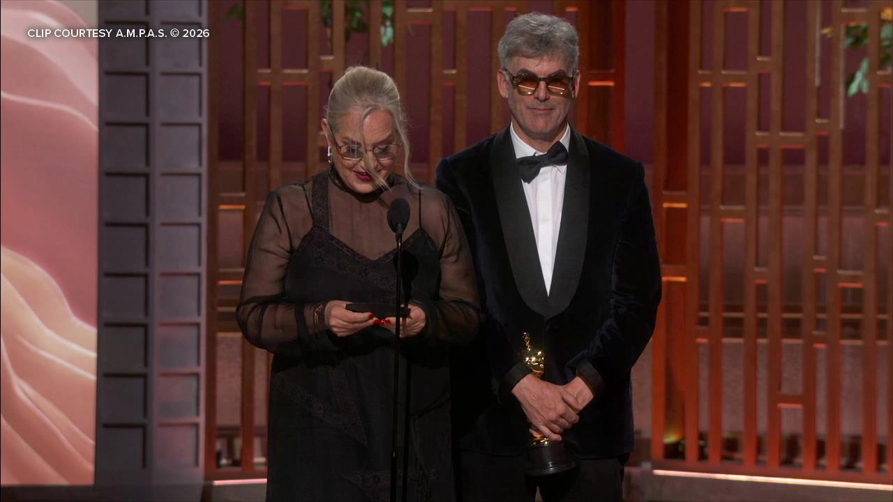

La 98ᵉ édition des Oscars a célébré une année cinématographique extraordinaire, avec des films tels que One Battle After Another, Sinners et Frankenstein en tête des gagnants.
Les grands vainqueurs
L’Academy of Motion Picture Arts and Sciences a célébré la 98ᵉ édition des prestigieux Oscars. Les Oscars 2026 ont récompensé une année cinématographique particulièrement exceptionnelle, avec des films largement acclamés tels que One Battle After Another de Paul Thomas Anderson, Sinners de Ryan Coogler et Frankenstein de Guillermo del Toro en tête des lauréats. One Battle After Another, en particulier, est sorti grand vainqueur des Oscars 2026 avec un total de 6 récompenses : Meilleur Film, Meilleur Réalisateur, Meilleur Scénario Adapté, Meilleur Second Rôle Masculin pour Sean Penn, le tout premier Oscar de la Meilleure Distribution, et Meilleur Montage.
Les 3 Oscars remportés par le réalisateur Paul Thomas Anderson pour One Battle After Another sont ses tout premiers, après pas moins de 14 nominations depuis 1998. Il s’agissait donc d’une soirée monumentale pour les fans de longue date de PTA. Il en va de même pour le réalisateur Ryan Coogler, qui a remporté le Prix du Meilleur Scénario Original pour Sinners. Le drame vampirique en costume de Coogler a également décroché les Oscars de la Meilleure Musique Originale, Meilleure Photographie et Meilleur Acteur pour Michael B. Jordan. Autumn Durald Arkapaw, la directrice de la photographie de Sinners, est devenue la première femme à remporter cet Oscar, un accomplissement historique. Par ailleurs, le compositeur Ludwig Göransson a remporté son troisième Oscar, après ses victoires pour Black Panther (2018) et Oppenheimer (2023).
En troisième position, Frankenstein de Guillermo del Toro a remporté 3 Oscars : Meilleure Direction Artistique, Meilleurs Costumes et Meilleur Maquillage et Coiffure. De plus, des œuvres culturelles remarquables comme KPop Demon Hunters et Sentimental Value ont remporté respectivement les Oscars du Meilleur Film d’Animation et du Meilleur Film International.
Les 98ᵉ Oscars ont été présentés par Conan O’Brien le dimanche 15 mars.
Full List of 2026 Oscar Winners
Best Picture
- Bugonia
- F1: The Movie
- Frankenstein
- Hamnet
- Marty Supreme
- One Battle After Another – WINNER
- The Secret Agent
- Sentimental Value
- Sinners
- Train Dreams
Best Actor
- Timothée Chalamet, Marty Supreme
- Leonardo DiCaprio, One Battle After Another
- Ethan Hawke, Blue Moon
- Michael B. Jordan, Sinners – WINNER
- Wagner Moura, The Secret Agent

Best Actress
- Jessie Buckley, Hamnet – WINNER
- Rose Byrne, If I Had Legs I’d Kick You
- Kate Hudson, Song Sung Blue
- Renate Reinsve, Sentimental Value
- Emma Stone, Bugonia

Best Supporting Actor
- Benicio del Toro, One Battle After Another
- Jacob Elordi, Frankenstein
- Delroy Lindo, Sinners
- Sean Penn, One Battle After Another – WINNER
- Stellan Skarsgård, Sentimental Value
Best Supporting Actress
- Elle Fanning, Sentimental Value
- Inga Ibsdotter Lilleaas, Sentimental Value
- Amy Madigan, Weapons – WINNER
- Wunmi Mosaku, Sinners
- Teyana Taylor, One Battle After Another
Best Director
- Chloé Zhao, Hamnet
- Josh Safdie, Marty Supreme
- Paul Thomas Anderson, One Battle After Another – WINNER
- Joachim Trier, Sentimental Value
- Ryan Coogler, Sinners

Original Screenplay
- Robert Kaplow, Blue Moon
- Jafar Panahi, It Was Just an Accident
- Ronald Bronstein & Josh Safdie, Marty Supreme
- Eskil Vogt & Joachim Trier, Sentimental Value
- Ryan Coogler, Sinners – WINNER
Adapted Screenplay
- Will Tracy, Bugonia
- Guillermo del Toro, Frankenstein
- Chloé Zhao & Maggie O’Farrell, Hamnet
- Paul Thomas Anderson, One Battle After Another – WINNER
- Clint Bentley & Greg Kwedar, Train Dreams
Animated Feature
- Arco
- Elio
- Kpop Demon Hunters – WINNER
- Little Amélie or the Character of Rain
- Zootopia 2

Documentary Feature
- The Alabama Solution
- Come See Me in the Good Light
- Cutting Through Rocks
- Mr. Nobody Against Putin – WINNER
- The Perfect Neighbor
International Feature
- The Secret Agent, Brazil
- It Was Just an Accident, France
- Sentimental Value, Norway – WINNER
- Sirāt, Spain
- The Voice of Hind Rajab, Tunisia
Editing
- Stephen Mirrione, F1: The Movie
- Ronald Bronstein & Josh Safdie, Marty Supreme
- Andy Jurgensen, One Battle After Another – WINNER
- Olivier Bugge Coutté, Sentimental Value
- Michael P. Shawver, Sinners
Cinematography
- Dan Laustsen, Frankenstein
- Darius Khondji, Marty Supreme
- Michael Bauman, One Battle After Another
- Autumn Durald Arkapaw, Sinners – WINNER
- Adolpho Veloso, Train Dreams
Original Score
- Jerskin Fendrix, Bugonia
- Alexandre Desplat, Frankenstein
- Max Richter, Hamnet
- Jonny Greenwood, One Battle After Another
- Ludwig Göransson, Sinners – WINNER
Casting
- Nina Gold, Hamnet
- Jennifer Venditti, Marty Supreme
- Cassandra Kulukundis, One Battle After Another – WINNER
- Gabriel Domingues, The Secret Agent
- Francine Maisler, Sinners
Production Design
- Frankenstein – WINNER
Production Design: Tamara Deverell; Set Decoration: Shane Vieau - Hamnet
Production Design: Fiona Crombie; Set Decoration: Alice Felton - Marty Supreme
Production Design: Jack Fisk; Set Decoration: Adam Willis - One Battle After Another
Production Design: Florencia Martin; Set Decoration: Anthony Carlino - Sinners
Production Design: Hannah Beachler; Set Decoration: Monique Champagne

Costume Design
- Deborah L. Scott, Avatar: Fire and Ash
- Kate Hawley, Frankenstein – WINNER
- Malgosia Turzanska, Hamnet
- Miyako Bellizzi, Marty Supreme
- Ruth E. Carter, Sinners
Visual Effects
- Avatar: Fire and Ash – WINNER
- F1: The Movie
- Jurassic World Rebirth
- The Lost Bus
- Sinners
Sound
- F1: The Movie – WINNER
- Frankenstein
- One Battle After Another
- Sinners
- Sirât
Makeup and Hairstyling
- Frankenstein – WINNER
Mike Hill, Jordan Samuel, & Cliona Furey - Kokuho
Kyoko Toyokawa, Naomi Hibino, & Tadashi Nishimatsu - Sinners
Ken Diaz, Mike Fontaine, & Shunika Terry - The Smashing Machine
Kazu Hiro, Glen Griffin, & Bjoern Rehbein - The Ugly Stepsister
Thomas Foldberg & Anne Cathrine Sauerberg
Original Song
- Dear Me – from Diane Warren: Relentless; Music and Lyric by Diane Warren
- Golden – WINNER – from KPop Demon Hunters; Music and Lyric by EJAE, Mark Sonnenblick, Joong Gyu Kwak, Yu Han Lee, Hee Dong Nam, Jeong Hoon Seon, and Teddy Park
- I Lied to You – from Sinners; Music and Lyric by Raphael Saadiq and Ludwig Goransson
- Sweet Dreams of Joy – from Viva Verdi!; Music and Lyric by Nicholas Pike
- Train Dreams – Music by Nick Cave and Bryce Dessner; Lyric by Nick Cave
Live-Action Short
- Butcher’s Stain
- A Friend of Dorothy
- Jane Austen’s Period Drama
- The Singers – WINNER (TIE)
- Two People Exchanging Saliva – WINNER (TIE)
Documentary Short
- All the Empty Rooms – WINNER
- Armed Only With a Camera: The Life and Death of Brent Renaud
- Children No More: “Were and Are Gone”
- The Devil Is Busy
- Perfectly A Strangeness
Animated Short
- Butterfly
- Forevergreen
- The Girl Who Cried Pearls – WINNER
- Retirement Plan
- The Three Sisters

En Conclusion
En somme, la 98ᵉ édition des Oscars a offert une soirée exceptionnelle, célébrant le talent, la créativité et la diversité du cinéma contemporain. Certains ont pu remettre en question le choix de Michael B. Jordan comme Meilleur Acteur, mais il est clair qu’un Oscar récompense une performance qui a marqué le cinéma cette année et encore plus dans son cas, en incarnant des jumeaux dans le film d’horreur Sinners, démontrant une individualité et un engagement exceptionnel devant la caméra. Une cérémonie mémorable qui restera gravée dans les mémoires des cinéphiles du monde entier. On se retrouve l’an prochain pour la 99ᵉ cérémonie des Oscars !